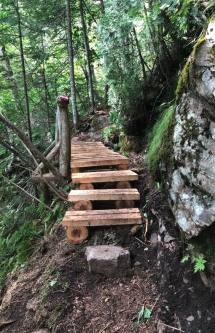
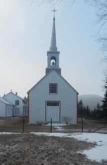

TOURISME
Découvrez nos forfaits tourisme
Explorez la nature grandiose de Baie-Sainte-Catherine grâce à nos forfaits plein air soigneusement conçus pour tous les types d’aventuriers. Que vous soyez amateur de randonnée, passionné de faune marine ou en quête de moments paisibles en pleine nature, laissez-vous séduire par nos escapades clés en main au cœur d’un décor spectaculaire.

Sentiers
Partez à la découverte des magnifiques sentiers pédestres de Baie-Sainte-Catherine, entre forêts boréales et points de vue époustouflants sur le fleuve.
30$

Baleines
Embarquez pour une excursion en bateau et vivez l’émotion de voir des baleines dans leur habitat naturel. Un moment unique, entre émerveillement et respect de la vie marine.
150$

Kayak
Explorez la côte en kayak de mer accompagné d’un guide naturaliste. Une façon paisible et immersive de découvrir les richesses du Saint-Laurent.
75$

Histoire
Partez en visite guidée à travers les lieux emblématiques du village et apprenez-en plus sur l’histoire maritime de la région. Inclut une montée au belvédère avec vue sur le fjord et le fleuve.